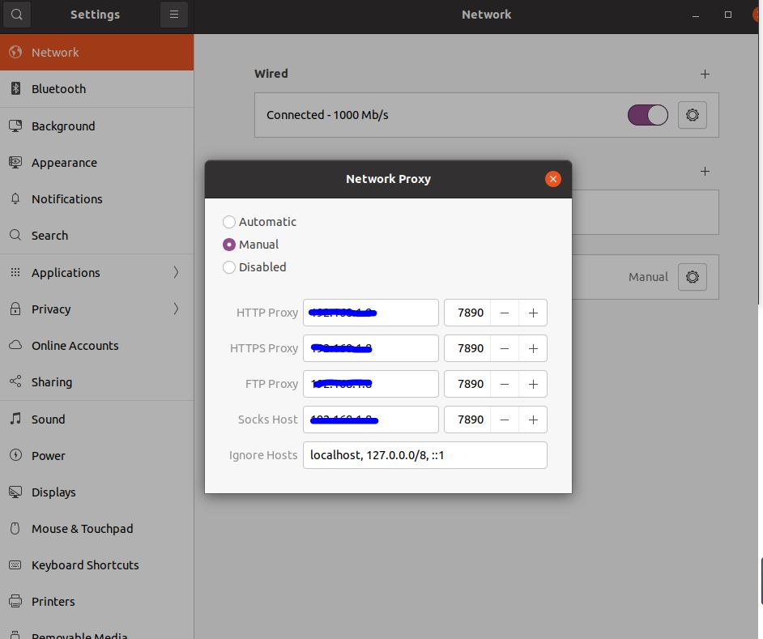
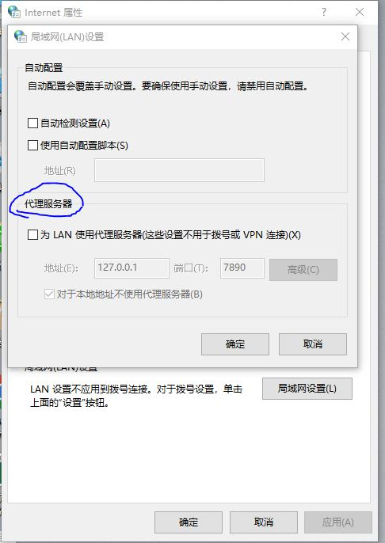
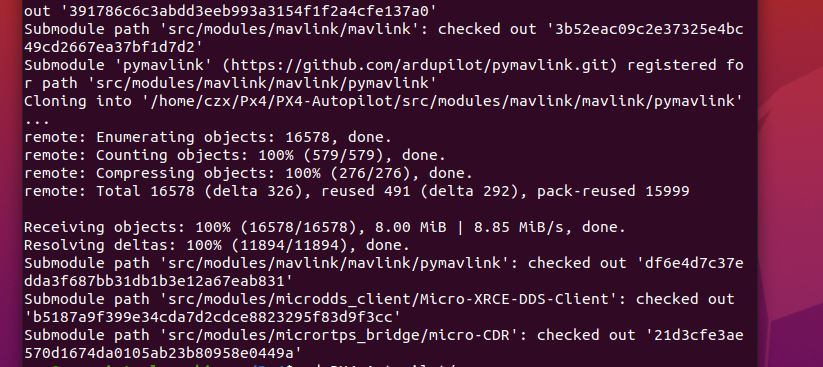
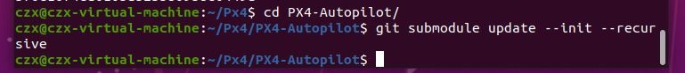
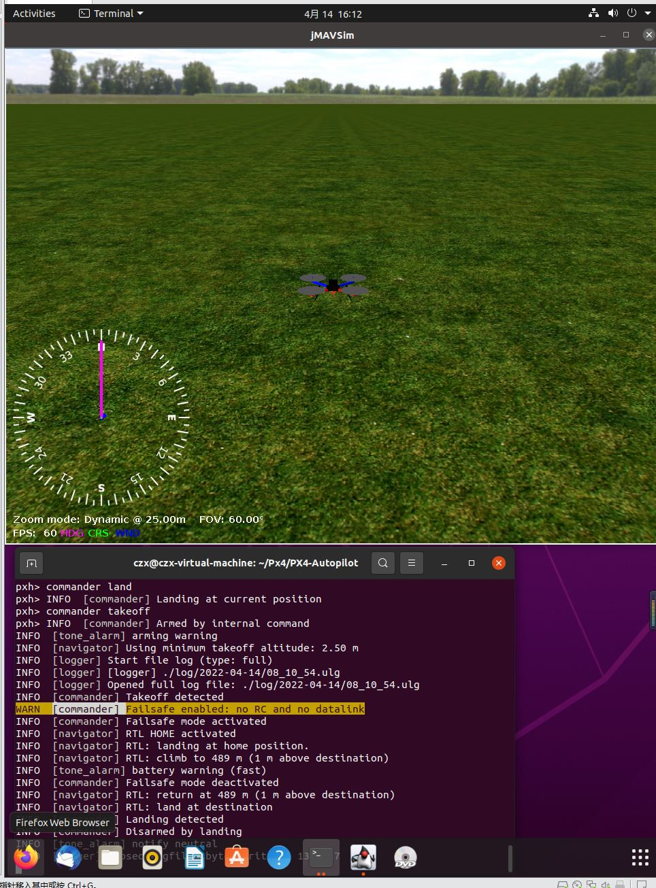
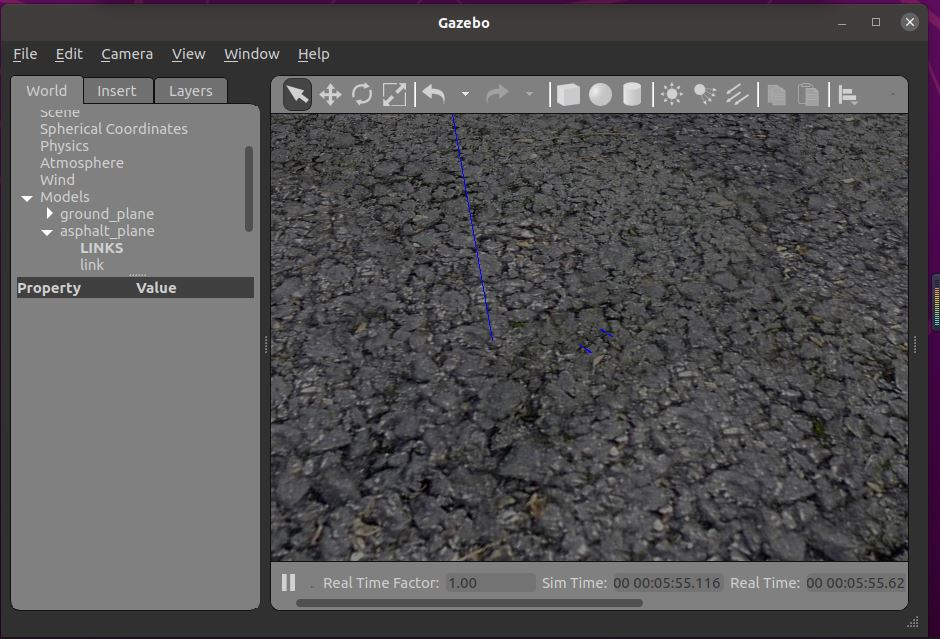
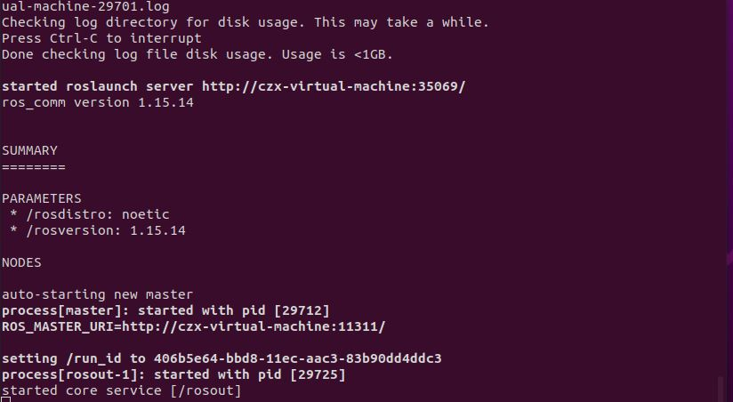
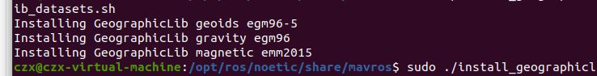
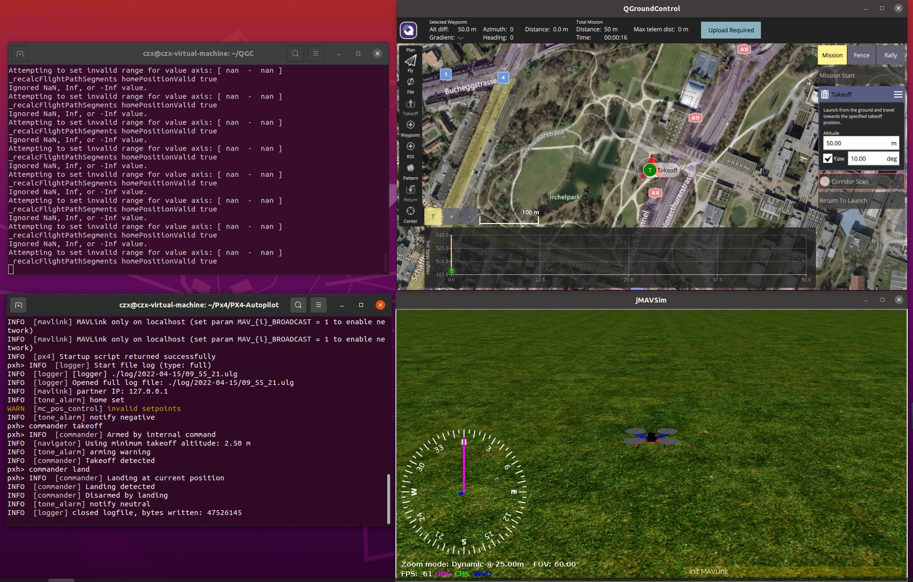
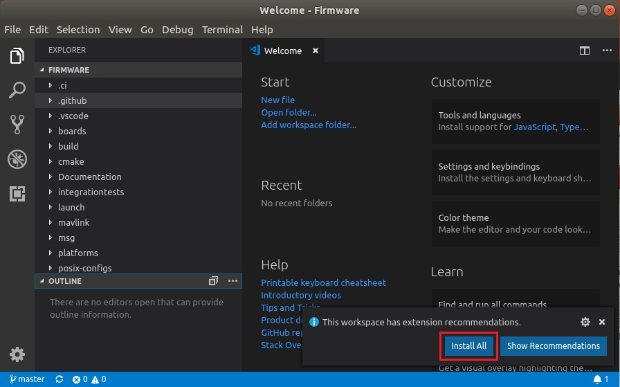

系统： VMware虚拟机+Linux 20.04
新建px4开发文件夹，后续的环境配置在该文件夹下进行
mkdir px4
cd px4/
PX4配置环境
1.添加用户到dialout工作组
将你创建的用户加入到用户组dialout中去，注销后重新登录。创建独立用户的目的是这样可以让开发环境分离开来，避免出现不同用户间的版本冲突等情况。将用户加入dialout用户组的目的是dialout拥有对串口tty的操作权限。
sudo usermod-a -G dialout$USER
完成用户组添加后重启Linux系统使其生效
2. 更新软件源列表
sudo apt-get update -y
3.安装软件依赖包
sudo apt-get install git zip qtcreator cmake build-essential genromfs ninja-build exiftool -y
4.安装常用Python依赖包及管理工具
sudo apt-get install python-argparse
sudo apt-get install python3-empy python3-toml python3-numpy python3-yaml \
python3-dev python3-pip -y
sudo -H pip install --upgrade pip
sudo -H pip install pandas jinja2 pyserial cerberus -i https://pypi.douban.com/simple
当存在多个python环境时，采用pip 或 sudo pip安装时，会存pip帮点的python环境与想要安装python依赖包的环境不一致的问题，可参考一下方法去更改Linux pip指令连接的python环境。
# pip的修改方式
sudo gedit ~/.bashrc
#在最后一行添加如下命令：
alias pip=python路径/bin/pip
alias pip3=python路径/bin/pip
#保存退出后，使用如下更新命令
source ~/.bashrc
# sudo pip的修改方式
sudo gedit /etc/profile
#在最后一行添加如下命令：
alias pip=python路径/bin/pip
alias pip3=python路径/bin/pip
#保存退出后，使用如下更新命令
source /etc/profile
解决git clone网速问题，配置科学上网工具
虚拟机Linux科学上网不建议配置clash代理，当前网络提供的clash代理的设置比较繁琐，切管理比较复杂，需要一定的Linux功底。在本人尝试的clash配置中，通过多次尝试，最终还是未能成功实现自由访问git。
安装科学上网工具，对于后续的git clone等帮助较大。
科学上网工具，网络存在免费和收费多种，可以自行考虑。付费的网络速度与稳定性优于免费。
1.在windows下安装vpn代理，开启局域网代理。检查是否可以登陆google、YouTube和git等网络。
2.关闭Windows的防火墙。以防对于虚拟机的桥接模式影响。
3.在虚拟机VM中设置虚拟机网络模式为桥接模式。
4.在虚拟机中设置代理，代理IP为主机IP，端口号为代理端口号。

1.安装网络代理可能导致网络网络无法连接事，在Internet属性（命令行打开方式为：运行- inetcpl.cpl ）的连接栏设置局域网（局域网设置），取消代理服务器。

PX4开发环境工具链安装
1.git克隆PX4项目到本地开发目录
git clone https://github.com/PX4/PX4-Autopilot.git --recursive

2.检查子模块克隆是否完整
# 进入克隆的px4目录下
cd PX4-Autopilot/
# 更新下载子模块
it submodule update --init --recursive

3.通过ubuntu.sh 文件安装工具链
这一步中需要安装python依赖包，需要对项目的ubuntu.sh中安装python的部分进行修改，更改python 的pip 源。
1.在./PX4-Autopilot/Tools/setup中找到ubuntu.sh文件，打开编辑：
# 更改pip源
#改前
# Python3 dependencies
echo
echo "Installing PX4 Python3 dependencies"
if [ -n "$VIRTUAL_ENV" ]; then
# virtual envrionments don't allow --user option
python -m pip install -i -r ${DIR}/requirements.txt
else
# older versions of Ubuntu require --user option
python3 -m pip install -i --user -r ${DIR}/requirements.txt
#改后
# Python3 dependencies
echo
echo "Installing PX4 Python3 dependencies"
if [ -n "$VIRTUAL_ENV" ]; then
# virtual envrionments don't allow --user option
python -m pip install -i https://pypi.tuna.tsinghua.edu.cn/simple -r ${DIR}/requirements.txt
else
# older versions of Ubuntu require --user option
python3 -m pip install -i https://pypi.tuna.tsinghua.edu.cn/simple --user -r ${DIR}/requirements.txt
2.运行安装脚本，完成工具链安装。
bash ./PX4-Autopilot/Tools/setup/ubuntu.sh
# 时间比较久
# 运行完成后，通过查看gcc版本检查Nuttx是否安装成功
arm-none-eabi-gcc --version
3.编译px4仿真（gazebo和jmavsim）
# 先cd到px4项目目录下
# jmavsim仿真
make px4_sitl jmavsim

提示无接收机和数据链，为非安全模式，可先通过一下代码测试起飞降落的仿真功能是否可以执行。
pxh> param set NAV_RCL_ACT 0
NAV_RCL_ACT: curr: 2 -> new: 0
pxh>
pxh> param set NAV_DLL_ACT 0
然后运行起飞和降落指令
pxh> commander takeoff
# 四轴可以正常起飞
pxh> commander land
#四轴可以正常降落
# 通过help指令获取常用指令，对于改变风力测试四轴自稳进行测试。
# 先cd到px4项目目录下
# gazebo仿真
make px4_sitl_default gazebo

ROS安装
1.添加ros软件源
sudo apt-key adv --keyserver 'hkp://keyserver.ubuntu.com:80' --recv-key C1CF6E31E6BADE8868B172B4F42ED6FBAB17C654
2.添加秘钥
sudo apt-key adv --keyserver 'hkp://keyserver.ubuntu.com:80' --recv-key C1CF6E31E6BADE8868B172B4F42ED6FBAB17C654
3.安装ros（与系统版本保持一直，20.04对应noetic版本）
sudo apt install ros-noetic-desktop-full
sudo apt update
4.检查ros是否安装成功
#
sudo rosdep init
# 如果显示命令找不到
sudo apt install python3-rosdep2 -y
#或者
sudo apt install python-rosdep -y
#ERROR: cannot download default sources list from:
#https://raw.githubusercontent.com/ros/rosdistro/master/rosdep/sources.list.d/20-default.list
#Website may be down.
sudo gedit /etc/hosts
#在文件末尾添加
151.101.84.133 raw.githubusercontent.com
#或者 151.101.76.133 raw.githubusercontent.com
5.检查rosdep update
rosdep update
6.设置环境变量
echo "source /opt/ros/noetic/setup.bash" >> ~/.bashrc
source ~/.bashrc
7.安装rosinstall
sudo apt install python3-rosinstall python3-rosinstall-generator python3-wstool build-essential
8.验证ros是否安装成功
roscore
如果报错如下

运行命令
sudo apt install ros-noetic-desktop-full
再次运行
roscore

安装成功
9.运行启动小乌龟
rosrun turtlesim turtlesim_node
10.安装gazebo的ros插件
sudo apt install ros-noetic-gazebo-* # 注意ros版本对应，20.04 noetic
安装完成后，运行一下代码检查是否安装完成，
#终端1启动ros
roscore
#终端2启动gazebo
rosrun gazebo_ros gazebo

如图所说，则安装成功。
11.安装mavros
1）mavros安装
#1
sudo apt install ros-noetic-mavros ros-noetic-mavros-extras
#2
roscd mavros
wget https://raw.githubusercontent.com/mavlink/mavros/master/mavros/scripts/install_geographiclib_datasets.sh
#3
sudo ./install_geographiclib_datasets.sh
# 该步花费时间较长

如上图所示，则安装结束。
2）编译工具安装
#安装编译工具
sudo apt-get install python3-catkin-tools python3-rosinstall-generator -y
3）创建mavros工作空间，建议新建单独的工作空间，后续的编译只能用catkin build进行，而不能用catkin_make。
mkdir -p ~/mavros_ws/src
cd ~/mavros_ws
catkin init
# If this is your first time using wstool you will need to initialize your source space with
wstool init src
# 安装MAVLink
rosinstall_generator --rosdistro kinetic mavlink | tee /tmp/mavros.rosinstall
# 安装MAVROS
rosinstall_generator --upstream-development mavros | tee -a /tmp/mavros.rosinstall
# 创建工作区和依赖环境
wstool merge -t src /tmp/mavros.rosinstall
wstool update -t src -j4 # j后面的数与自身系统放的线程数匹配
rosdep install --from-paths src --ignore-src -y
# 安装 [GeographicLib](https://geographiclib.sourceforge.io/) 数据集
# 编译源码
catkin build
编译结束，效果如下

安装Ninjia编译工具
sudo apt-get install ninja-build -y
安装地面站QGC
sudo apt install gstreamer1.0-plugins-bad gstreamer1.0-libav gstreamer1.0-gl -y
sudo apt install libqt5gui5 -y
下载QGroundControl.AppImage：https://d176tv9ibo4jno.cloudfront.net/latest/QGroundControl.AppImage
将QGroundControl.AppImage放置到安装目录下，更改文件权限，并运行
# cd 到存储目录下
chmod +x ./QGroundControl.AppImage
./QGroundControl.AppImage (or double click)
启动地面站，如图所示：

启动jMAvsim，结合QGC，尝试连接地面站与PX4仿真。

多机仿真gazebo
编译工具安装VScode
1.前往官网 Running Visual Studio Code on Linux下载对应版本安装包deb文件
2.参考官网安装指导完成VScode安装。
3.开启VScode，并导入PX4项目。
czx@czx-virtual-machine:~/Desktop$ code
#Select Open folder ... option on the welcome page (or using the menu: File > Open Folder):
# 选择git的px4项目
#选择信任该文件夹
#安装所需插件
